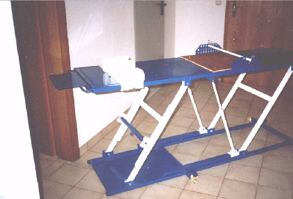

"Youngtimer Voegerl "

Wenn ich mich kurz vorstellen darf , VÖGERL Georg ist mein Name.
Meine Frau Maria und ich in einem BMW Isetta 250 von einem befreundeten Oldtimer Kollegen

-----------------------------------------------------------------------------------------------------------------------------------
In meiner Kellerwerkstatt restauriere ich vor allem japanische Motorräder der 70 er Jahre.

Als Maschinenbauer und KFZ- Mechaniker
schraube ich gerne an alten Motorrädern und Maschinen.
Ein Kollege sagte mir mal , der auch der
an alten Fahrzeugen bastelt .
" Wenn man einen Vogel hat , so soll man ihn fliegen lassen!!
Noch ein Bild zu meiner selbstgebauten Motorradhebebühne.

Nun werden Sie vielleicht sagen diese alten Fahrzeuge stinken doch so.
Ich sage Ihnen ,wenn jemand mal eine Zigarre raucht ,
bringt man ihn deswegen ja auch nicht gleich um.

Hier ein mobiler Ständer in drehbarer Ausführung für
Präsentationen auf Ausstellungen